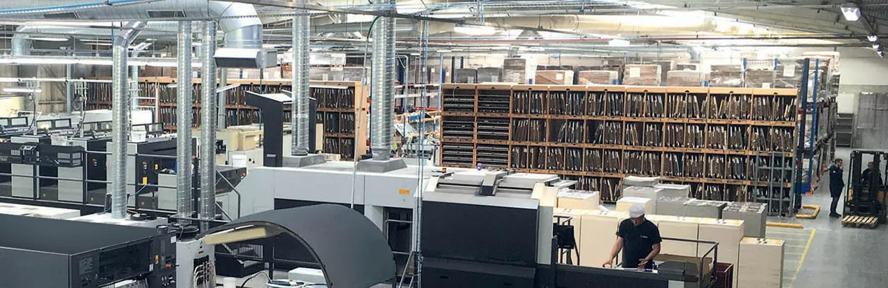
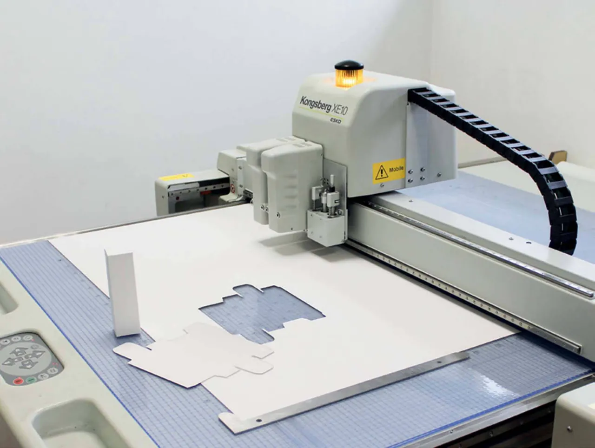

Cartonnages industriels · Bayonne
La fabriqued’une boîte.
Une feuille de carton, six encres et un vernis, une forme de découpe, un filet de colle. Faites défiler pour suivre la matière jusqu’à l’étui.
- 01Impression
- 02Découpe
- 03Pliage-collage
- 04L’étui
Toutes les boîtes pliantes
Une ligne, plusieurs boîtes.
La même chaîne d’impression, de découpe et de pliage-collage fabrique chaque type de boîte pliante. En voici quelques-uns.
01 Étui à patte collée
La patte latérale est collée sur le corps ; les rabats se rentrent aux deux extrémités.
02 Étui à patte simple
Un rabat rentrant ferme l’étui, qui se rouvre et se referme à la main.
03 Fourreau
Un manchon ouvert aux deux bouts, qui coulisse autour d’une barquette ou d’un produit.
04 Fond automatique
Le fond, collé à plat, se forme tout seul quand on ouvre l’étui.
05 4 et 6 points
Barquettes et boîtes dont les coins sont collés en quatre ou six points.
Dessins schématiques. Types de boîtes cités par l’entreprise : étuis, fourreaux, 4 points, 6 points, fonds automatiques, bords collés, barquettes · cartonnages-larre.fr
Photographies de l’entreprise
L’atelier de Bayonne.
Quatre générations de cartonnage à Bayonne. Voici les machines qui font chaque étape. Voir le process industriel




Photographies publiées par l’entreprise · cartonnages-larre.fr